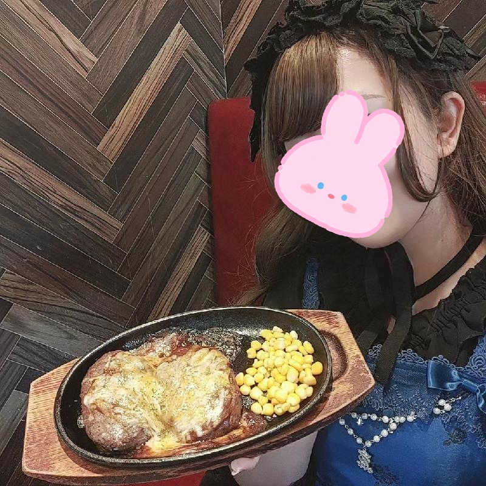

2024/05/19🌞
毎週末恒例油パーティー
今日もおいしいランチをGETしたむにです💕
今日の午前中は日曜参観で、一般人に扮して次男と一1校時～4校時まで時間を共にしてきました！
中腰で何時間もこの重たい体を支えて脚の血流滞って、ずっとしびれていて、
姿勢でしびれてるのか、重さでしびれてるのかもうわけわからなくなるぐらい立ってても歩いてる時もしびれててビビりました（笑）
数時間後にしびれもなくなり、来ました！！
毎週日曜日開催の油パーティーの時間✨✨✨
今日は職場の方のオススメの北谷にある【ばくばく亭】に出動しようと試みましたが、
気の利く夫は、一般人スタイルから私がお色直しをしている間に、事前にネットでお店について調べてくれていて、
ランチタイムが14時までで、ディナーが17時からという情報をGETしてくれました。
ただ今の時刻13時半！！ということでお口の中はもうハンバーグになっていたので、近場のステーキ88へGO！！してきました😊
チーズハンバーグを捕獲してお腹も満たしたところで、JavaScriptを学びにLet's go！
